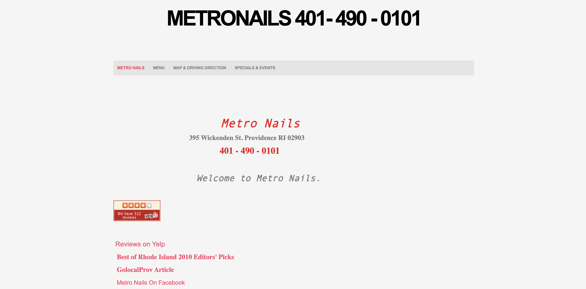

Project Description
Here we're going to go through the workflow of redesigning a simple website. We will analyze and
identify flaws in an existing interface, create
low-fidelity and high-fidelity prototypes for various screen sizes, and build a responsive website
based
on those prototypes!
Identifying Usability Problems
Picking a Web Page
I chose to redesign this website for MetroNails, a nail salon in Providence. I encountered this
website last
year when looking for nail salons near Brown University. I
immediately noticed it looked outdated, unprofessional and wasn't easy to use.
Link To MetroNails Current Website

Usability Problems By Category
Efficiency:
Even users who are familiar with this site would have to
scroll and navigate
to multiple tabs to get the information they are most interested in. Because there are
no clear headings for each section of information and the text is not in an easily recognizable
pattern, even familiar users may have to read multiple sections to get the
information they are looking for.
Learnability:
The hours of operation, services available and method of
booking all are hidden within paragraphs of text and are not obvious to a first time user. The
variation in
font,size and color of text also makes it jarring for first time users.It would
take multiple visits to the site to remember where to look.
Memorability:
A user encountering this interface who was once familiar
with the site does not have much advantage over a first time user. There are no icons or
other
elements that would make a user instinctively look at a given portion of the site.
Aesthetically:
Generally this interface has an unpleasant aesthetic
experience. Overall
as an interface this did not feel intuitive for me as a user. I think especially for a
service where artistry and aesthetics are important their website must be up to a
certain standard. As mentioned previously there should be more consistency with the style, size,
font and color of the text.
Accessibility Problems
I chose to redesign this website for a nail salon in Providence. I encountered this website last
year when looking for nail salons near Brown University, I
immediately noticed it looked outdated, unprofessional and wasn't easy to use.
Visual Redesign
Low-fidelity Wireframing


Responsive Redesign
Below is a link to my responsive redesign of the MetroNails Website! Feel free to play with the size
of your browser to see how the website looks on other computer screens, try changing the font size
on your browser, or to see how the website looks on other devices!
Link To the MetroNails Responsive Redesign